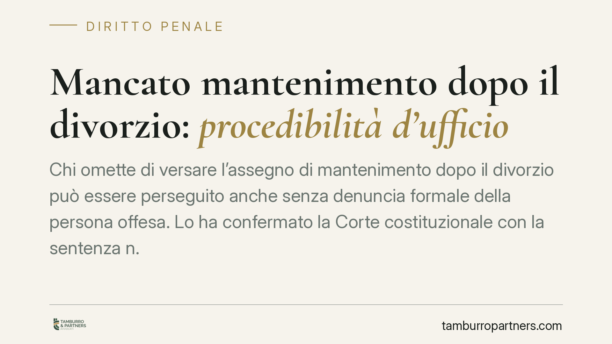
Mancato mantenimento dopo il divorzio: procedibilità d'ufficio
Chi omette di versare l'assegno di mantenimento dopo il divorzio può essere perseguito anche senza denuncia formale della persona offesa. Lo ha confermato la Corte costituzionale c…
Stalking e condotte riparatorie: perché il risarcimento non estingue il reato
Si torna a discutere se il risarcimento del danno possa chiudere un processo per stalking. La risposta, sul piano normativo, è negativa: la causa di estinzione per condotte riparat…
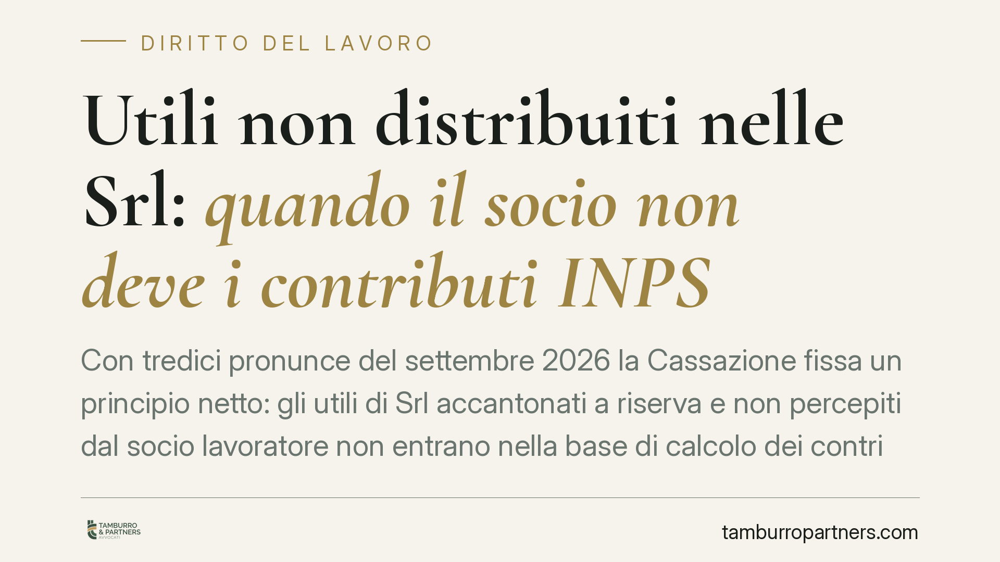
Utili non distribuiti nelle Srl: quando il socio non deve i contributi INPS
Con tredici pronunce del settembre 2026 la Cassazione fissa un principio netto: gli utili di Srl accantonati a riserva e non percepiti dal socio lavoratore non entrano nella base d…
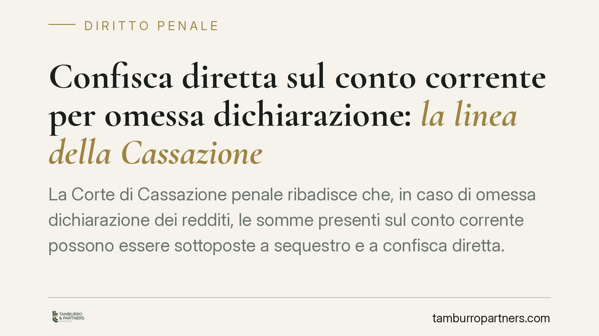
Confisca diretta sul conto corrente per omessa dichiarazione: la linea della Cassazione
La Corte di Cassazione penale ribadisce che, in caso di omessa dichiarazione dei redditi, le somme presenti sul conto corrente possono essere sottoposte a sequestro e a confisca di…
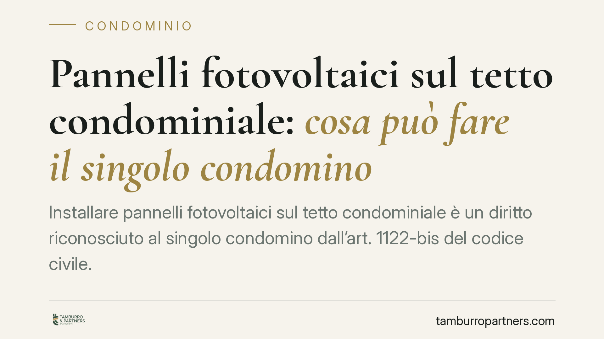
Pannelli fotovoltaici sul tetto condominiale: cosa può fare il singolo condomino
Installare pannelli fotovoltaici sul tetto condominiale è un diritto riconosciuto al singolo condomino dall'art. 1122-bis del codice civile. Ma quel diritto non è illimitato: incon…
Clausola risolutiva espressa: il contratto si scioglie davvero da solo?
La clausola risolutiva espressa promette uno scioglimento rapido del contratto in caso di inadempimento. Ma è davvero automatico? Il Tribunale di Genova (sent. n. 2412/2026) ridime…
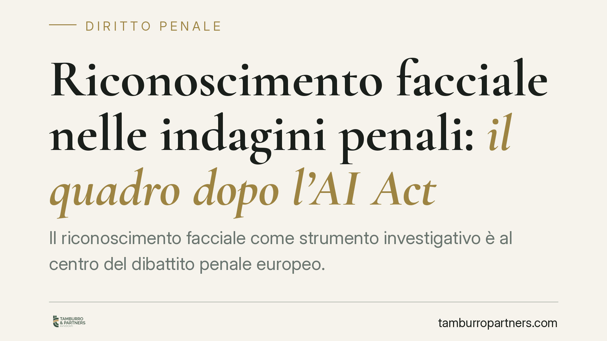
Riconoscimento facciale nelle indagini penali: il quadro dopo l'AI Act
Il riconoscimento facciale come strumento investigativo è al centro del dibattito penale europeo. Il Regolamento UE 2024/1689 (AI Act) classifica l'identificazione biometrica remot…
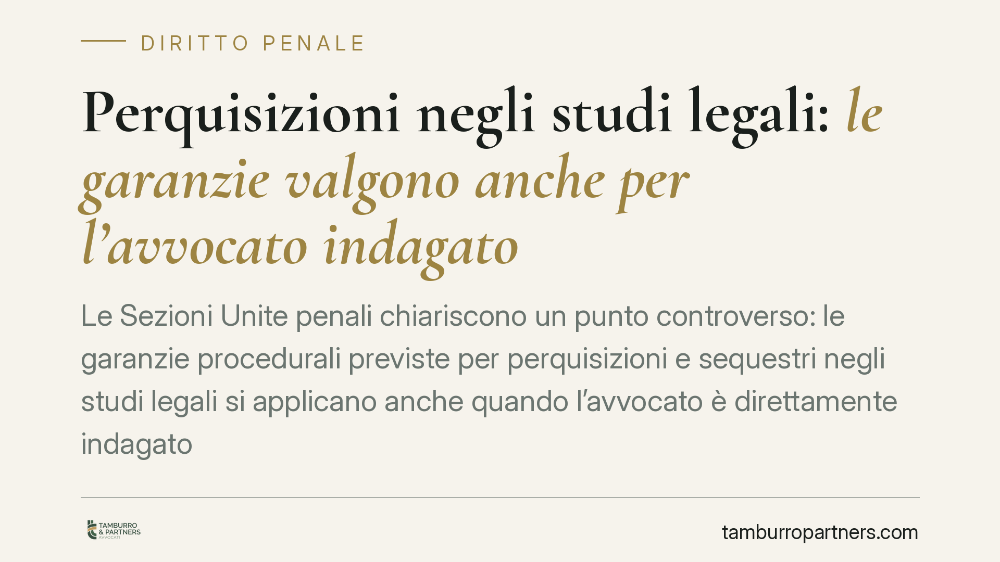
Perquisizioni negli studi legali: le garanzie valgono anche per l'avvocato indagato
Le Sezioni Unite penali chiariscono un punto controverso: le garanzie procedurali previste per perquisizioni e sequestri negli studi legali si applicano anche quando l'avvocato è d…
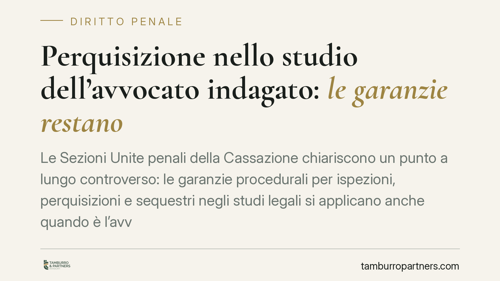
Perquisizione nello studio dell'avvocato indagato: le garanzie restano
Le Sezioni Unite penali della Cassazione chiariscono un punto a lungo controverso: le garanzie procedurali per ispezioni, perquisizioni e sequestri negli studi legali si applicano …
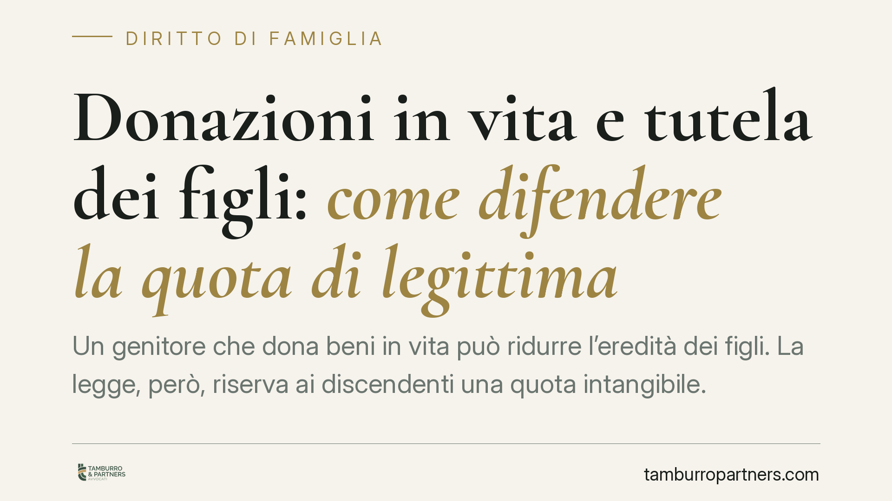
Donazioni in vita e tutela dei figli: come difendere la quota di legittima
Un genitore che dona beni in vita può ridurre l'eredità dei figli. La legge, però, riserva ai discendenti una quota intangibile. Quando le donazioni la intaccano, i legittimari dis…
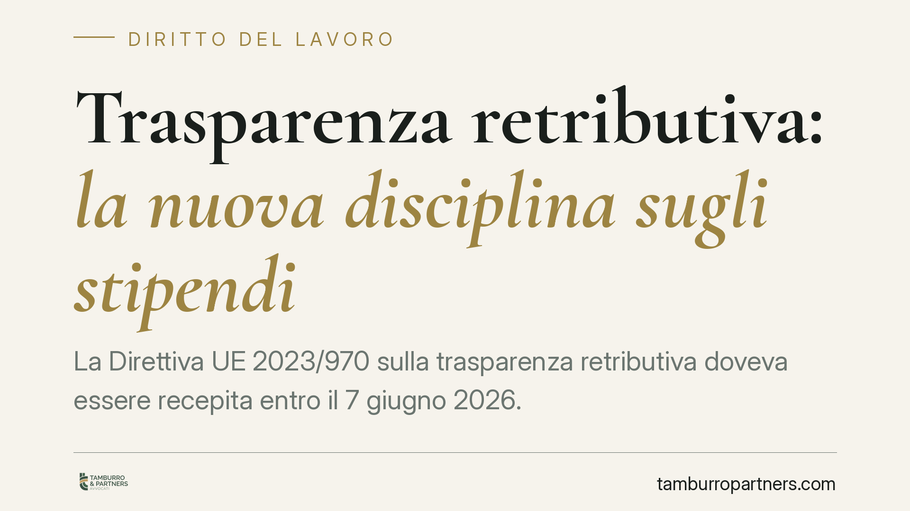
Trasparenza retributiva: la nuova disciplina sugli stipendi
La Direttiva UE 2023/970 sulla trasparenza retributiva doveva essere recepita entro il 7 giugno 2026. Il provvedimento nazionale introduce obblighi informativi su stipendi, il conc…
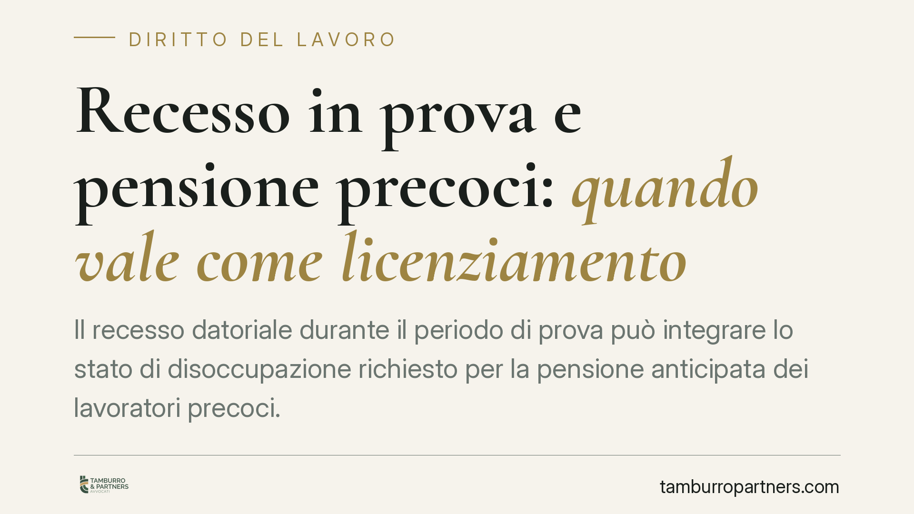
Recesso in prova e pensione precoci: quando vale come licenziamento
Il recesso datoriale durante il periodo di prova può integrare lo stato di disoccupazione richiesto per la pensione anticipata dei lavoratori precoci. Una recente pronuncia della C…
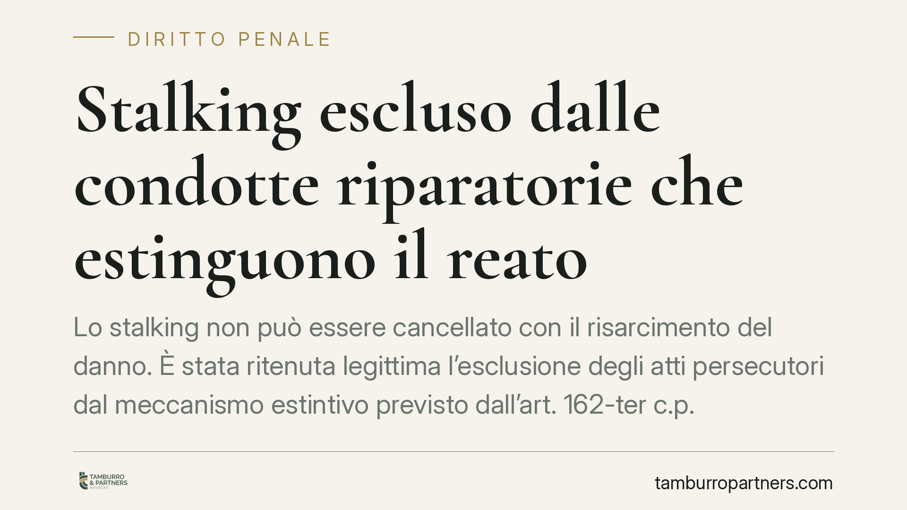
Stalking escluso dalle condotte riparatorie che estinguono il reato
Lo stalking non può essere cancellato con il risarcimento del danno. È stata ritenuta legittima l'esclusione degli atti persecutori dal meccanismo estintivo previsto dall'art. 162-…
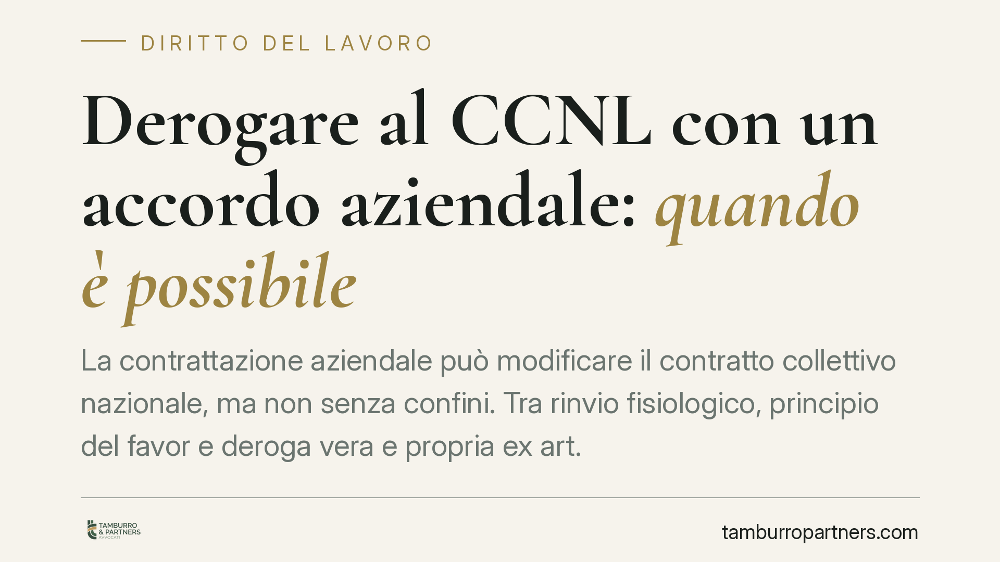
Derogare al CCNL con un accordo aziendale: quando è possibile
La contrattazione aziendale può modificare il contratto collettivo nazionale, ma non senza confini. Tra rinvio fisiologico, principio del favor e deroga vera e propria ex art. 8 de…
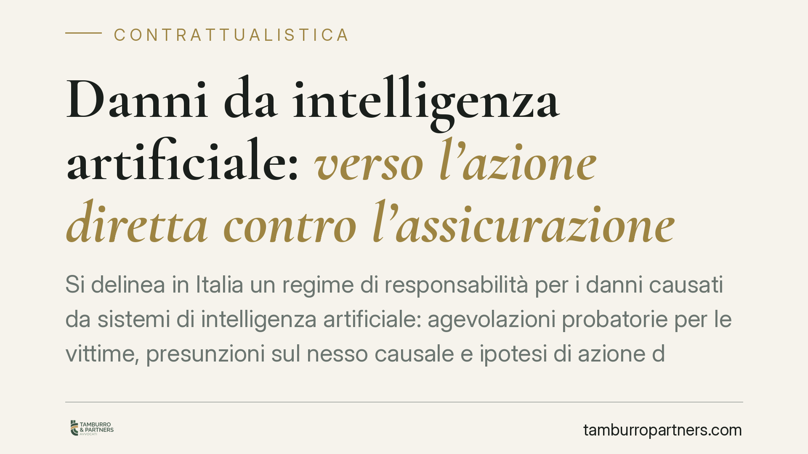
Danni da intelligenza artificiale: verso l'azione diretta contro l'assicurazione
Si delinea in Italia un regime di responsabilità per i danni causati da sistemi di intelligenza artificiale: agevolazioni probatorie per le vittime, presunzioni sul nesso causale e…
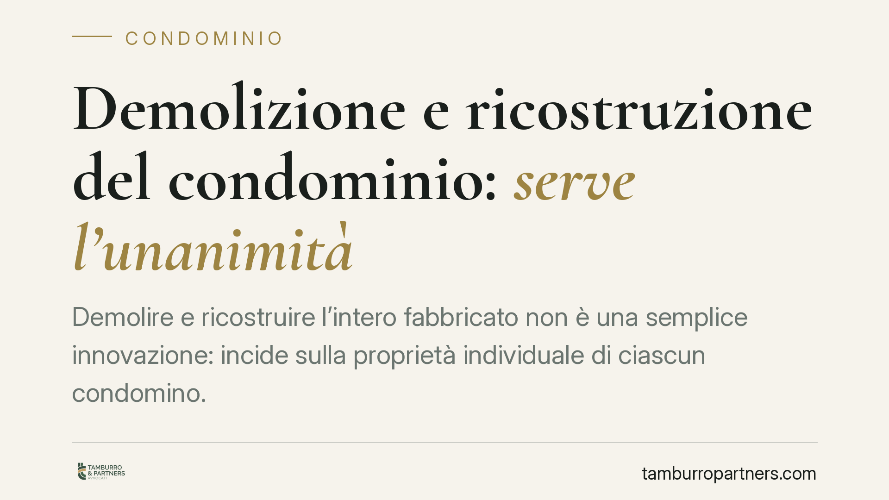
Demolizione e ricostruzione del condominio: serve l'unanimità
Demolire e ricostruire l'intero fabbricato non è una semplice innovazione: incide sulla proprietà individuale di ciascun condomino. Per questo non basta la maggioranza assembleare,…
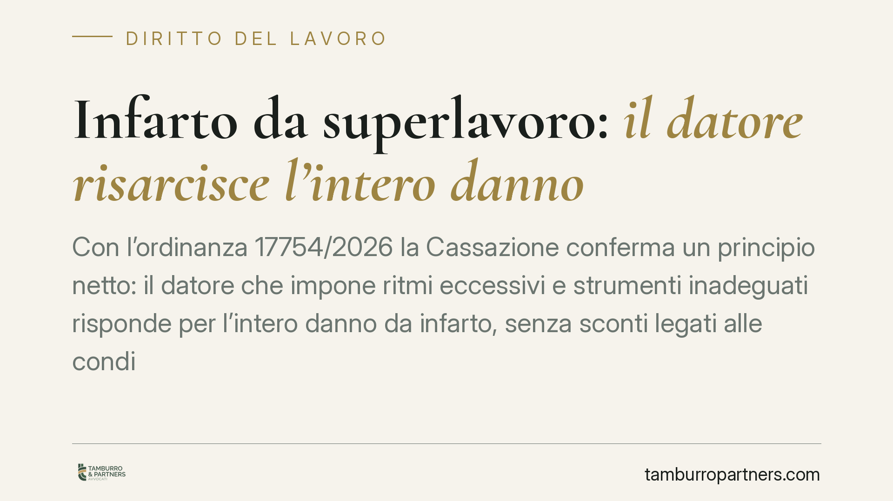
Infarto da superlavoro: il datore risarcisce l'intero danno
Con l'ordinanza 17754/2026 la Cassazione conferma un principio netto: il datore che impone ritmi eccessivi e strumenti inadeguati risponde per l'intero danno da infarto, senza scon…
Il verbale del cancelliere basta per trasferire un immobile?
Negli accordi di separazione e divorzio capita di trasferire immobili tra coniugi. Ci si chiede se il verbale d'udienza sottoscritto dal cancelliere basti a trascrivere il passaggi…

Conguaglio energia e contatore manomesso: la prescrizione biennale
Un conguaglio energetico da oltre 22.000 euro è stato dichiarato prescritto dal Tribunale di Roma. Secondo i giudici, la prescrizione biennale introdotta dalla Legge di Bilancio 20…

Contributi non versati dal datore: il lavoratore perde la pensione?
Quando il datore di lavoro omette di versare i contributi e questi cadono in prescrizione, il lavoratore rischia un buco nella carriera assicurativa. L'ordinamento offre un rimedio…

Sospensione cautelare del lavoratore e diritto alla restitutio in integrum
La sospensione cautelare allontana il lavoratore dal servizio in via provvisoria, non come sanzione. Se il presupposto viene meno, si apre il tema della restitutio in integrum: rip…

Mancata partecipazione alla mediazione civile: sanzioni e rischi dopo la Riforma Cartabia
Un provvedimento del Tribunale di Milano torna sul dovere di partecipare al primo incontro di mediazione civile. Chi diserta senza motivo valido rischia sanzioni economiche e conse…

Casa familiare: il diritto di abitazione dell'ex coniuge separato
Il coniuge separato senza addebito conserva, alla morte dell'altro, i diritti di abitazione e uso sulla casa familiare. Lo ribadisce la Corte di Cassazione, che allinea la posizion…

Eredità con immobili abusivi: la divisione giudiziale è nulla
La Corte di Cassazione ha chiarito che la divisione giudiziale di un'eredità è radicalmente nulla quando riguarda immobili con abusi edilizi non sanati. Si tratta di una nullità fo…

Regolamento condominiale e spese: quando un appartamento può essere esonerato
Un regolamento condominiale può liberare del tutto un appartamento dalle spese comuni? La Corte di Cassazione fissa un confine netto: l'esonero è possibile solo con regolamento con…

Sicurezza sul lavoro: l'INL apre alla rateizzazione della sanzione ridotta ex art. 21
Con nota n. 2010/2026 l'Ispettorato Nazionale del Lavoro chiarisce che la sanzione ridotta prevista dall'art. 21 D.lgs. 758/1994, dovuta dopo l'adempimento della prescrizione in ma…

Errore della cancelleria sull'avviso di deposito: l'appello tardivo va comunque giudicato
Quando la cancelleria comunica una data di deposito della sentenza errata e il difensore calcola su quella il termine per impugnare, l'appello non è necessariamente tardivo. Un rec…

Appalto e stipendi non pagati: quando risponde il committente
Quando l'impresa appaltatrice non versa retribuzioni, TFR o contributi, i lavoratori possono agire direttamente contro il committente. È la responsabilità solidale prevista dall'ar…

Riconoscimento facciale e law enforcement: cosa prevede la riforma in cantiere
Il riconoscimento facciale entra nel processo penale attraverso uno schema di decreto in fase di attuazione dell'AI Act. Si delinea un doppio binario tra uso preventivo e investiga…

Contributi previdenziali: la cartella tardiva non cancella il debito
La decadenza dei termini per iscrivere a ruolo i contributi previdenziali colpisce il titolo esecutivo, non il credito. In altre parole: la cartella tardiva perde efficacia, ma la …